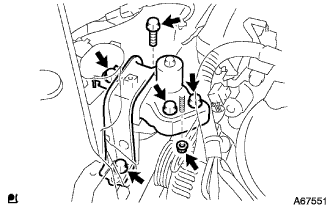

ウォータポンプASSY 取り外し |
| 1. エンジンアンダ カバー RH取りはずし |
ボルト2本およびスクリュ2本をはずす。
ナットをはずし、エンジンアンダーカバーRHを取りはずす。
| 2. 冷却液(トヨタ純正スーパーLLC)抜き取り |
ラジエータキヤツプを開ける。
ラジエータドレーンコツクプラグをゆるめ冷却液を抜き取る。
| 3. シリンダヘッド カバー NO.2取りはずし |
 |
ナット4個をはずし、シリンダーヘッドカバーNo.2を取りはずす。
| 4. ファン ＆ オルタネータ Vベルト取りはずし |
 |
調整用ボルトAおよび固定用ボルトBを緩める。
Vベルトの張力を緩めてVベルトを取りはずす。
| 5. オルタネータASSY取りはずし |
 |
ターミナルキャップを取りはずす。
コネクタおよびハーネスクランプを切り離す。
ナットをはずし、B端子ターミナルを取りはずす。
 |
ボルトAおよびナットをはずし、ファンベルトアジャスティングバーを取りはずす。
 |
固定用ボルトBをはずし、オルタネータを取りはずす。
| 6. エンジンマウンティング インシュレータSUB-ASSY RH取りはずし |
 |
木片などを介して、ジャッキでエンジンを支える。
|  |
ボルト５本およびナットをはずし、エンジンマウンティングインシュレータＲＨを取りはずす。
| 7. ウォータポンプ プーリ取りはずし |
ＳＳＴを使用して、ウオータポンププーリを固定する。
 |
ボルト３本をはずし、ウォータポンププーリを取りはずす。
| 8. ウォータ ポンプASSY取りはずし |
 |
ボルト３本およびナット２個をはずし、ウォータポンプＡＳＳＹを取りはずす。